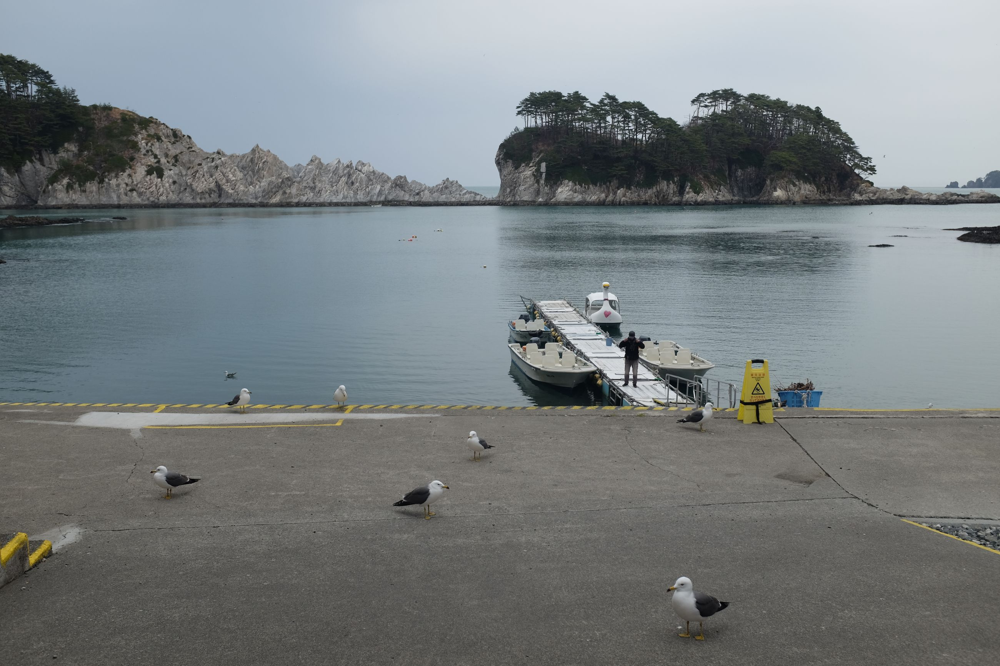
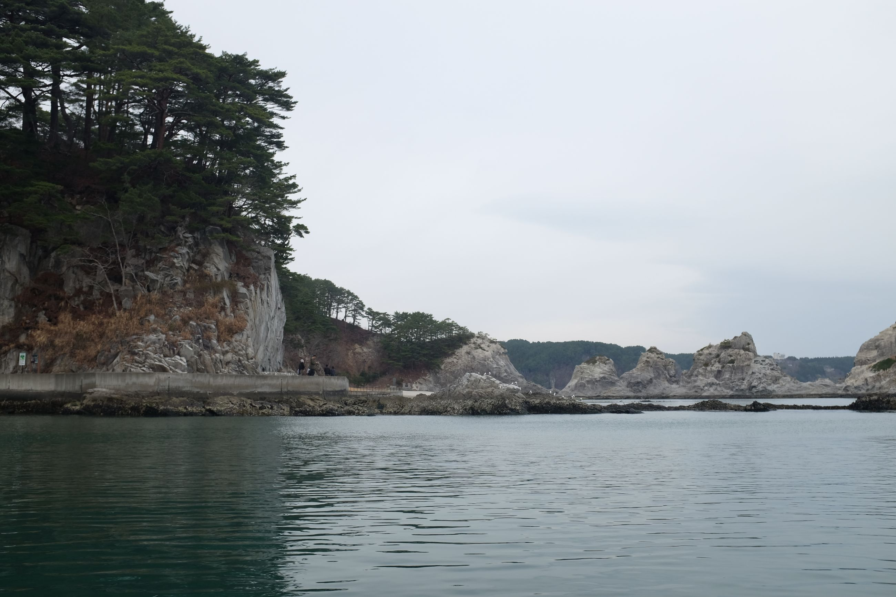
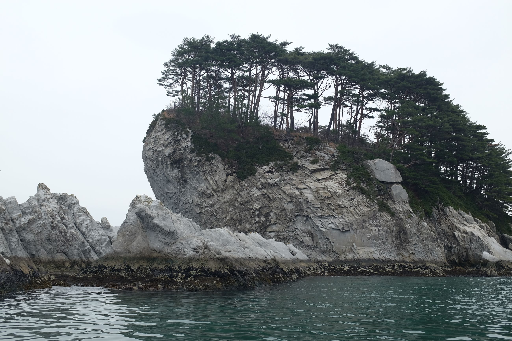
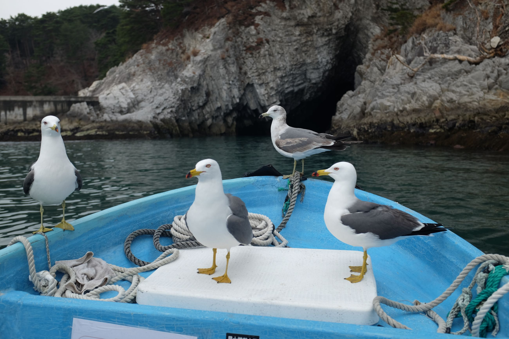
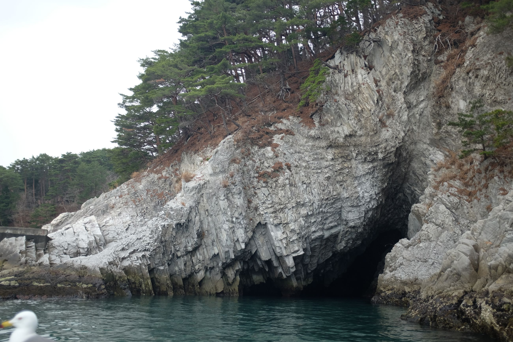
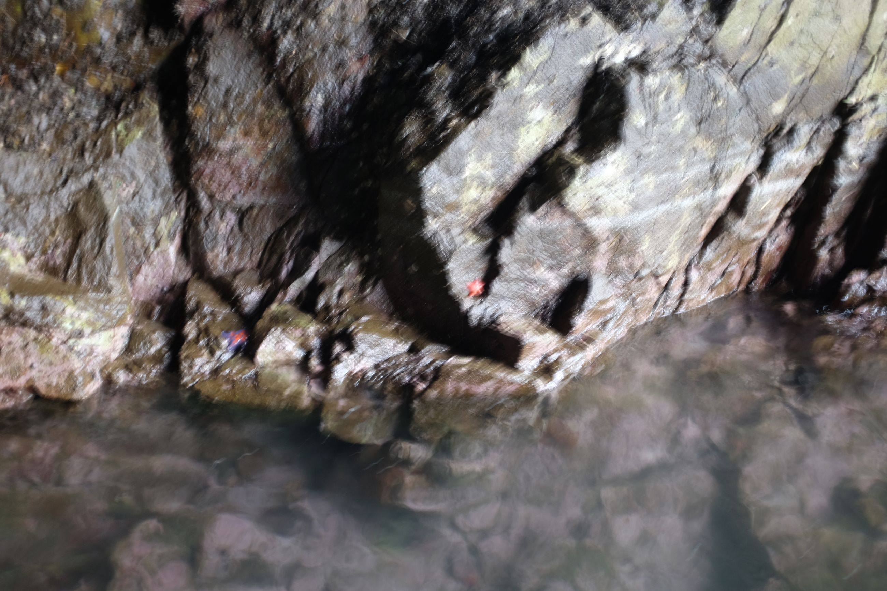
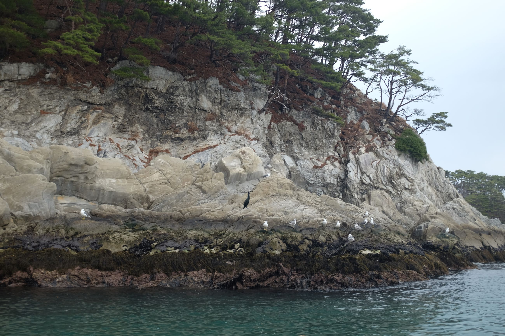
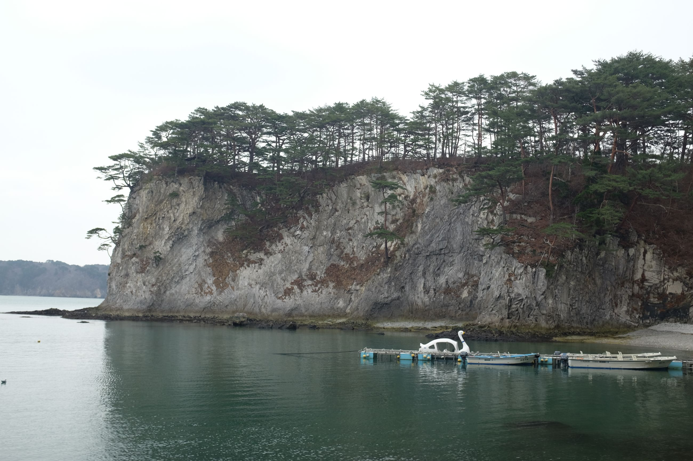
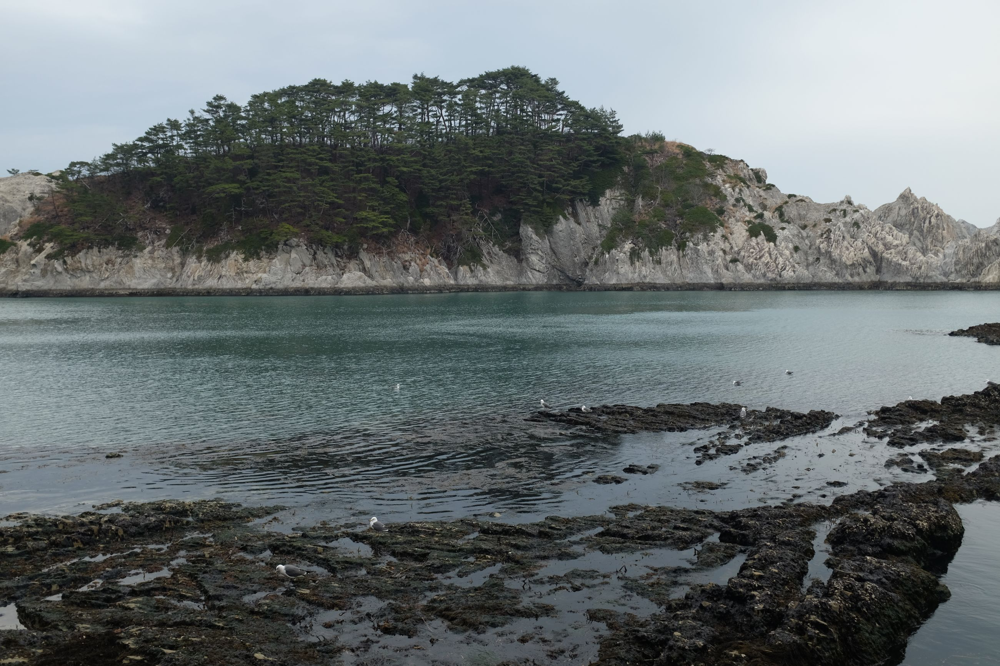
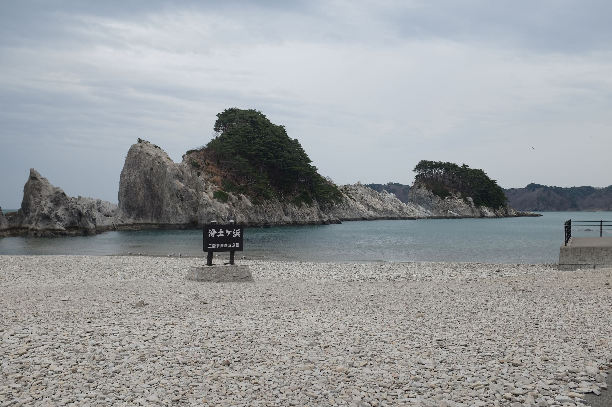

Today was a rest day, so we decided to go to Jodogahama Beach, where we were supposed to end up yesterday. We forgot that we were on vacation, and so decided to take the day just sightseeing and doing some souvenir shopping
On a cloudy day, it's like a quiet seaside English beach. There's a very nice visitor centre that doubles as a museum, and a small restaurant on site to eat.
After a few days of mountain-climbing up and down and roaring seas, it was nice to see water in a bay. Calm, without a wave, as if it weren't the same body of water. A reminder that a day off -- of stillness -- is sometimes necessary.
Feeding the seagulls, though, was absolutely terrifying. They aren't afraid of anything.
My day below in pictures -- all of Jodogahama Beach.









